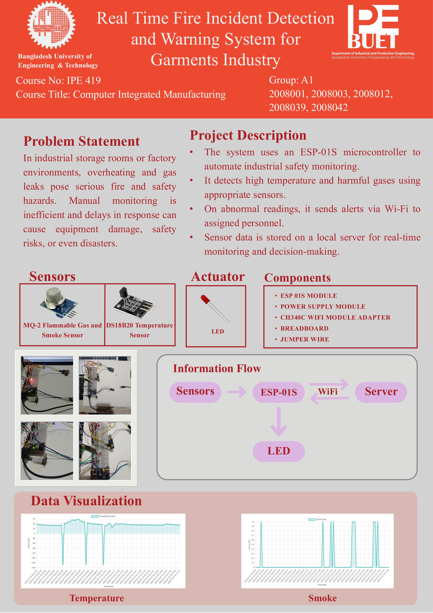

In industrial storage rooms or factory environments, overheating and gas leaks pose serious fire and safety hazards. Manual monitoring is inefficient and delays in response can cause equipment damage, safety risks, or even disasters.
| Device / Component | Task / Function |
|---|---|
| Temperature Sensor (DS18B20) | Detects ambient temperature and overheating |
| Smoke Sensor (MQ-2) | Detects smoke/gas leaks indicating fire |
| Buzzer | Audible alert if smoke or high temperature is detected |
| Red Flashing Light / LED | Visual fire alert |
| ESP-01S Microcontroller | Handles sensor readings, logic, and data upload via Wi-Fi |

#include <ESP8266WiFi.h>
#include <ESP8266HTTPClient.h>
const char* ssid = "aks";
const char* password = "akash123";
const char* baseUrl = "http://ipe20-buet.top/get_data.php";
const byte MQ2_PIN = 0;
const byte LED_PIN = 2;
WiFiClient client;
void setup() {
Serial.begin(115200);
pinMode(MQ2_PIN, INPUT);
pinMode(LED_PIN, OUTPUT);
digitalWrite(LED_PIN, LOW);
WiFi.begin(ssid, password);
while (WiFi.status() != WL_CONNECTED) { delay(500); }
}
void loop() {
int smokeDetected = digitalRead(MQ2_PIN);
String smokeStatus = (smokeDetected == LOW) ? "1" : "0";
digitalWrite(LED_PIN, (smokeDetected == LOW) ? HIGH : LOW);
if (WiFi.status() == WL_CONNECTED) {
String fullURL = String(baseUrl) + "?g=groupA1&sn=Smoke&sd=" + smokeStatus + "&p=passA1&format=json";
HTTPClient http; http.begin(client, fullURL); int httpCode = http.GET();
http.end();
}
delay(5000);
}
Arduino Code: Temperature Sensor (ESP8266 + DS18B20)
#include <ESP8266WiFi.h>
#include <ESP8266HTTPClient.h>
#include <OneWire.h>
#include <DallasTemperature.h>
const char* ssid = "aks";
const char* password = "akash123";
const char* baseUrl = "http://ipe20-buet.top/get_data.php";
const byte DS18B20_PIN = 0;
const byte LED_PIN = 2;
OneWire oneWire(DS18B20_PIN);
DallasTemperature sensors(&oneWire);
WiFiClient client;
void setup() {
Serial.begin(115200);
pinMode(LED_PIN, OUTPUT);
digitalWrite(LED_PIN, LOW);
sensors.begin();
WiFi.begin(ssid, password);
while (WiFi.status() != WL_CONNECTED) { delay(500); }
}
void loop() {
sensors.requestTemperatures();
float temperature = sensors.getTempCByIndex(0);
if (temperature > 35.0) { digitalWrite(LED_PIN, HIGH); }
else { digitalWrite(LED_PIN, LOW); }
if (WiFi.status() == WL_CONNECTED) {
String url = String(baseUrl) + "?g=groupA1&sn=Temperature&sd=" + String(temperature,2) + "&p=passA1&format=json";
HTTPClient http; http.begin(client, url); int httpCode = http.GET();
http.end();
}
delay(5000);
}